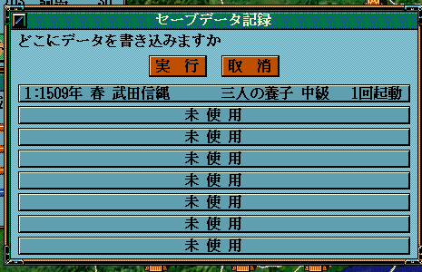

void カスタム::On_セーブデータ保存時(int スロット番号, string セーブファイル名) {
}

void カスタム::On_セーブデータ保存時(int スロット番号, string セーブファイル名) {
デバッグ出力 << "スロット番号:" << スロット番号 << endl;
デバッグ出力 << "セーブファイル名:" << セーブファイル名 << endl;
}
void カスタム::On_セーブデータ保存時(int スロット番号, string セーブファイル名) {
// 何らかの内部データを外部テキスト等へと保存する処理
// その際には、「本来のセーブデータ(savedat.n6p等)」と外部セーブデータ「個々人が管理するもの」
// を紐づけるための番号を「Set_フラグ」関数等を用いて、セーブデータに保存しておく必要がある。
// 例としての具体的コードは長大となるため、割愛する。
}